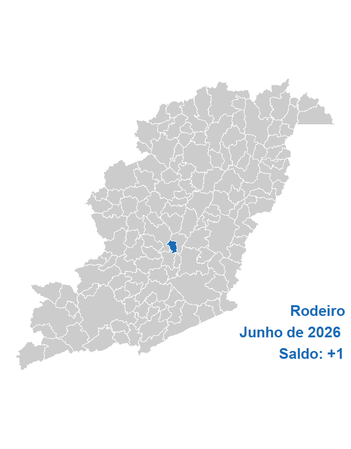
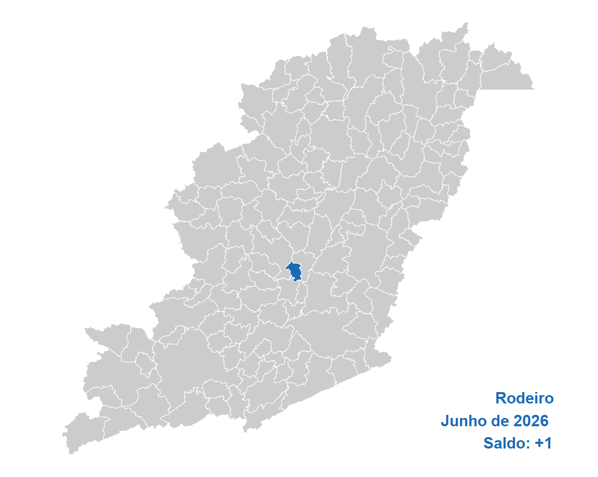

| Ano | Brasil | Estado | Mesorregião | Microrregião | Município |
|---|---|---|---|---|---|
| 2026 | 145.161 | 20.805 | 1.094 | 145 | 1 |
| 2025 | 161.999 | 23.948 | 997 | 144 | 21 |
| 2024 | 206.624 | 28.699 | 2.354 | 135 | -28 |
| 2023 | 155.820 | 25.378 | 830 | -170 | -21 |
| 2022 | 285.263 | 33.820 | 2.071 | 173 | 10 |
| 2021 | 318.140 | 42.286 | 3.044 | 446 | 10 |
| 2020 | -53.381 | 2.773 | -180 | 394 | 159 |
| 2019 | 48.436 | 11.603 | 486 | -259 | -49 |
| 2018 | -661 | 12.143 | 512 | -242 | 15 |
| 2017 | 9.821 | 15.445 | 780 | -71 | -10 |
| 2016 | -91.032 | 4.567 | -169 | -349 | -49 |
| 2015 | -111.199 | 9.746 | 654 | -368 | -138 |
| 2014 | 25.363 | 15.717 | 978 | -13 | 5 |
| 2013 | 123.836 | 28.064 | 2.051 | -41 | -9 |
| 2012 | 115.480 | 38.484 | 2.422 | 81 | -20 |
| 2011 | 215.393 | 45.021 | 2.529 | 72 | 11 |
| 2010 | 212.952 | 38.870 | 1.992 | 259 | 12 |
| 2009 | 119.496 | 45.596 | 2.059 | 348 | 79 |
| 2008 | 309.442 | 73.660 | 5.352 | 453 | -12 |
| 2007 | 181.667 | 46.080 | 2.385 | 471 | 148 |
| Ano | Mes | Brasil | Estado | Mesorregião | Microrregião | Município |
|---|---|---|---|---|---|---|
| 2026 | Junho | 145.161 | 20.805 | 1.094 | 145 | 1 |
| 2026 | Maio | 81.823 | 9.830 | 120 | 163 | 33 |
| 2026 | Abril | 79.832 | 8.616 | 588 | -67 | 40 |
| 2026 | Março | 228.950 | 37.958 | 1.751 | 209 | 38 |
| 2026 | Fevereiro | 268.050 | 24.220 | 133 | -343 | -11 |
| 2026 | Janeiro | 117.829 | 7.548 | 65 | 589 | 106 |
| 2025 | Dezembro | -633.732 | -74.005 | -6.005 | -1.331 | -127 |
| 2025 | Novembro | 82.244 | -9.039 | 864 | -71 | -28 |
| 2025 | Outubro | 93.287 | -4.218 | 830 | 318 | 64 |
| 2025 | Setembro | 214.173 | 11.834 | 998 | 666 | 91 |
| 2025 | Agosto | 152.328 | 1.423 | 1.832 | 269 | -3 |
| 2025 | Julho | 133.976 | 3.422 | 148 | 250 | 49 |
| Acum. 2026 | 921.645 | 108.977 | 3.751 | 696 | 207 | |
| Acumulado 12m | 963.921 | 38.394 | 2.418 | 797 | 253 |
| CBO | Brasil | Estado | Mesorregião | Microrregião | Município |
|---|---|---|---|---|---|
| Forças armadas | 17 | 4 | 4 | NA | NA |
| Poder público | -11.247 | -1.219 | -68 | -9 | 1 |
| Ciências e artes | -2.393 | -179 | 33 | -5 | 0 |
| Técnicos de nível médio | 10.551 | 610 | 173 | 7 | -3 |
| Serviços administrativo | 42.853 | 2.567 | 101 | -1 | 9 |
| Serviços e comércio | 47.993 | 3.561 | 261 | 11 | 4 |
| Agropecuária | 20.571 | 9.903 | 148 | 45 | -1 |
| Bens e serviços industriais 1 | 39.117 | 6.028 | 426 | 87 | -22 |
| Bens e serviços industriais 2 | -1.568 | -410 | 2 | 10 | 14 |
| Reparação e manutenção | -733 | -60 | 14 | 0 | -1 |
| CNAE | Brasil | Estado | Mesorregião | Microrregião | Município |
|---|---|---|---|---|---|
| Agropecuária/florestal | 22.898 | 10.987 | 156 | 40 | NA |
| Extrativismo | 182 | -184 | 30 | -2 | NA |
| Indústria de transformação | 12.592 | 2.047 | 22 | 39 | 5 |
| Eletricidade e gás | 359 | 54 | 4 | NA | NA |
| Água e esgoto | 1.305 | -81 | -41 | -17 | NA |
| Construção | 14.136 | 2.478 | 162 | 66 | 0 |
| Comércio de automotores | 19.177 | 1.332 | 272 | -18 | -5 |
| Transporte e correios | 16.217 | 566 | 4 | -1 | -2 |
| Alojamento e alimentação | 6.590 | 354 | -28 | 7 | 2 |
| Comunicação | 1.038 | 30 | 366 | 1 | NA |
| Atividades financeiras | 761 | 96 | 12 | -2 | NA |
| Imobiliárias | 476 | 89 | 13 | 0 | NA |
| Atividades científicas e técnicas | 4.646 | 36 | 76 | 16 | 3 |
| Atividades administrativas | 26.634 | 222 | -134 | -9 | -3 |
| Administração pública | 1.136 | 186 | 27 | 2 | NA |
| Educação | -7.642 | 429 | -67 | -2 | NA |
| Saúde e serviços sociais | 20.436 | 1.619 | 91 | 19 | -1 |
| Artes, cultura e esportes | 1.049 | 177 | 31 | 6 | NA |
| Serviços | 3.182 | 371 | 99 | 0 | 2 |
| Domésticos | 5 | -3 | NA | NA | NA |
| Organismos internacionais | -14 | 1 | NA | NA | NA |
| Não classificado | -2 | -1 | -1 | NA | NA |
| Educ | Brasil | Estado | Mesorregião | Microrregião | Município |
|---|---|---|---|---|---|
| Analfabeto | 1.072 | 175 | -8 | -6 | -1 |
| Até o 5º ano incompleto | 5.335 | 1.098 | -18 | 2 | 3 |
| 5º ano completo | 2.637 | 513 | -29 | 12 | 0 |
| 6º ano completo até o 9º ano incompleto | 2.092 | 770 | -14 | -17 | -3 |
| Fundamental completo | 5.929 | 1.692 | 68 | -12 | -12 |
| Médio incompleto | 15.185 | 2.173 | 50 | 8 | -2 |
| Médio completo | 109.255 | 14.583 | 1.157 | 152 | 10 |
| Superior incompleto | 5.259 | 480 | -99 | 6 | 0 |
| Superior completo | -1.603 | -679 | -13 | 0 | 6 |
| Idade | Brasil | Estado | Mesorregião | Microrregião | Município |
|---|---|---|---|---|---|
| 10 a 14 anos | 2.328 | 113 | 3 | 2 | NA |
| 15 a 17 anos | 22.505 | 2.734 | 158 | 33 | 5 |
| 18 a 24 anos | 100.597 | 10.913 | 744 | 148 | 3 |
| 25 a 29 anos | 13.007 | 1.919 | -72 | 0 | -3 |
| 30 a 39 anos | 8.209 | 2.008 | 190 | -30 | -13 |
| 40 a 49 anos | 11.104 | 2.753 | 134 | -2 | 1 |
| 50 a 64 anos | -4.678 | 779 | -17 | -5 | 7 |
| 65 anos ou mais | -6.580 | -294 | -37 | 2 | 1 |
| NA | -1.331 | -120 | -9 | -3 | NA |
| Raça | Brasil | Estado | Mesorregião | Microrregião | Município |
|---|---|---|---|---|---|
| Indígena | 28.636 | 4.493 | 79 | -39 | -2 |
| Branca | 20.199 | 2.773 | 298 | 71 | -7 |
| 3 | 106.176 | 14.677 | 819 | 128 | 13 |
| Preta | -66 | -84 | -7 | -6 | -2 |
| 5 | 779 | 148 | -9 | 0 | -1 |
| Amarela | -9.846 | -1.140 | -82 | -9 | NA |
| 9 | -717 | -62 | -4 | NA | NA |
| Gênero | Brasil | Estado | Mesorregião | Microrregião | Município |
|---|---|---|---|---|---|
| Homens | 72.569 | 11.468 | 309 | 109 | -1 |
| Mulheres | 72.592 | 9.337 | 785 | 36 | 2 |
| Grande_setor | Brasil | Estado | Mesorregião | Microrregião | Município |
|---|---|---|---|---|---|
| Indústria | 14.438 | 1.836 | 15 | 20 | 5 |
| Construção civil | 14.136 | 2.478 | 162 | 66 | 0 |
| Comércio | 19.177 | 1.332 | 272 | -18 | -5 |
| Serviços | 74.514 | 4.173 | 490 | 37 | 1 |
| Agropecuária, extrativismo vegetal,caça e pesca | 22.898 | 10.987 | 156 | 40 | NA |
| Não classificado | -2 | -1 | -1 | NA | NA |
| Setores | Brasil | Estado | Mesorregião | Microrregião | Município |
|---|---|---|---|---|---|
| Extrativismo mineral | 182 | -184 | 30 | -2 | NA |
| Indústria de transformação | 12.592 | 2.047 | 22 | 39 | 5 |
| Serviços industriais de utilidade pública | 1.664 | -27 | -37 | -17 | NA |
| Construção civil | 14.136 | 2.478 | 162 | 66 | 0 |
| Comércio | 19.177 | 1.332 | 272 | -18 | -5 |
| Serviços | 73.392 | 3.986 | 463 | 35 | 1 |
| Adiminstração pública | 1.120 | 186 | 26 | 2 | NA |
| Agropecuária, extrativismo vegetal, caça e pesca | 22.898 | 10.987 | 156 | 40 | NA |
| Ano | Brasil | Estado | Mesorregião | Microrregião | Município |
|---|---|---|---|---|---|
| 2002 | 28.683.913 | 3.046.362 | 285.345 | 37.275 | 1.307 |
| 2003 | 29.544.927 | 3.138.026 | 288.853 | 38.834 | 1.350 |
| 2004 | 31.407.576 | 3.332.775 | 298.898 | 41.257 | 1.545 |
| 2005 | 33.238.617 | 3.592.560 | 322.026 | 44.558 | 1.804 |
| 2006 | 32.903.959 | 3.744.043 | 337.470 | 47.552 | 2.091 |
| 2007 | 37.607.430 | 4.036.203 | 354.945 | 49.452 | 2.373 |
| 2008 | 39.441.566 | 4.184.183 | 369.202 | 50.331 | 2.494 |
| 2009 | 41.207.546 | 4.350.839 | 388.196 | 55.212 | 2.740 |
| 2010 | 44.068.355 | 4.646.891 | 408.037 | 58.263 | 2.978 |
| 2011 | 46.310.631 | 4.850.976 | 429.166 | 61.498 | 3.221 |
| 2012 | 47.458.712 | 4.928.225 | 439.074 | 63.197 | 3.185 |
| 2013 | 48.948.433 | 5.057.080 | 454.446 | 65.172 | 3.336 |
| 2014 | 49.571.510 | 5.071.906 | 456.058 | 65.801 | 3.536 |
| 2015 | 48.060.807 | 4.821.116 | 445.516 | 62.152 | 3.191 |
| 2016 | 46.060.198 | 4.628.701 | 426.384 | 58.644 | 3.029 |
| 2017 | 46.281.590 | 4.710.919 | 435.944 | 60.274 | 3.299 |
| 2018 | 46.631.115 | 4.760.830 | 436.333 | 61.782 | 3.651 |
| 2019 | 46.748.356 | 4.856.025 | 435.241 | 62.319 | 3.505 |
| 2020 | 46.236.176 | 4.814.874 | 423.457 | 60.774 | 3.667 |
| 2021 | 48.728.871 | 5.148.435 | 448.511 | 64.038 | 3.758 |
| 2022 | 52.788.939 | 5.523.279 | 476.377 | 68.532 | 3.843 |
| 2023 | 54.705.614 | 5.633.160 | 497.668 | 70.557 | 4.242 |
| 2024 | 57.789.526 | 6.094.585 | 511.827 | 72.459 | 4.472 |
| 2025 | 60.688.704 | 6.325.291 | 538.504 | 76.064 | 5.089 |
| Ano | Brasil | Estado | Mesorregião | Microrregião |
|---|---|---|---|---|
| 2002 | 0,0046 | 0,0429 | 0,4580 | 3,5064 |
| 2003 | 0,0046 | 0,0430 | 0,4674 | 3,4763 |
| 2004 | 0,0049 | 0,0464 | 0,5169 | 3,7448 |
| 2005 | 0,0054 | 0,0502 | 0,5602 | 4,0487 |
| 2006 | 0,0064 | 0,0558 | 0,6196 | 4,3973 |
| 2007 | 0,0063 | 0,0588 | 0,6686 | 4,7986 |
| 2008 | 0,0063 | 0,0596 | 0,6755 | 4,9552 |
| 2009 | 0,0066 | 0,0630 | 0,7058 | 4,9627 |
| 2010 | 0,0068 | 0,0641 | 0,7298 | 5,1113 |
| 2011 | 0,0070 | 0,0664 | 0,7505 | 5,2376 |
| 2012 | 0,0067 | 0,0646 | 0,7254 | 5,0398 |
| 2013 | 0,0068 | 0,0660 | 0,7341 | 5,1188 |
| 2014 | 0,0071 | 0,0697 | 0,7753 | 5,3738 |
| 2015 | 0,0066 | 0,0662 | 0,7162 | 5,1342 |
| 2016 | 0,0066 | 0,0654 | 0,7104 | 5,1651 |
| 2017 | 0,0071 | 0,0700 | 0,7567 | 5,4733 |
| 2018 | 0,0078 | 0,0767 | 0,8367 | 5,9095 |
| 2019 | 0,0075 | 0,0722 | 0,8053 | 5,6243 |
| 2020 | 0,0079 | 0,0762 | 0,8660 | 6,0338 |
| 2021 | 0,0077 | 0,0730 | 0,8379 | 5,8684 |
| 2022 | 0,0073 | 0,0696 | 0,8067 | 5,6076 |
| 2023 | 0,0078 | 0,0753 | 0,8524 | 6,0122 |
| 2024 | 0,0077 | 0,0734 | 0,8737 | 6,1718 |
| 2025 | 0,0084 | 0,0805 | 0,9450 | 6,6904 |
| Ano | Brasil | Estado | Mesorregião | Microrregião | Município |
|---|---|---|---|---|---|
| 2002 | NA | NA | NA | NA | NA |
| 2003 | 3,00 | 3,01 | 1,23 | 4,18 | 3,29 |
| 2004 | 6,30 | 6,21 | 3,48 | 6,24 | 14,44 |
| 2005 | 5,83 | 7,79 | 7,74 | 8,00 | 16,76 |
| 2006 | -1,01 | 4,22 | 4,80 | 6,72 | 15,91 |
| 2007 | 14,29 | 7,80 | 5,18 | 4,00 | 13,49 |
| 2008 | 4,88 | 3,67 | 4,02 | 1,78 | 5,10 |
| 2009 | 4,48 | 3,98 | 5,14 | 9,70 | 9,86 |
| 2010 | 6,94 | 6,80 | 5,11 | 5,53 | 8,69 |
| 2011 | 5,09 | 4,39 | 5,18 | 5,55 | 8,16 |
| 2012 | 2,48 | 1,59 | 2,31 | 2,76 | -1,12 |
| 2013 | 3,14 | 2,61 | 3,50 | 3,13 | 4,74 |
| 2014 | 1,27 | 0,29 | 0,35 | 0,97 | 6,00 |
| 2015 | -3,05 | -4,94 | -2,31 | -5,55 | -9,76 |
| 2016 | -4,16 | -3,99 | -4,29 | -5,64 | -5,08 |
| 2017 | 0,48 | 1,78 | 2,24 | 2,78 | 8,91 |
| 2018 | 0,76 | 1,06 | 0,09 | 2,50 | 10,67 |
| 2019 | 0,25 | 2,00 | -0,25 | 0,87 | -4,00 |
| 2020 | -1,10 | -0,85 | -2,71 | -2,48 | 4,62 |
| 2021 | 5,39 | 6,93 | 5,92 | 5,37 | 2,48 |
| 2022 | 8,33 | 7,28 | 6,21 | 7,02 | 2,26 |
| 2023 | 3,63 | 1,99 | 4,47 | 2,95 | 10,38 |
| 2024 | 5,64 | 8,19 | 2,85 | 2,70 | 5,42 |
| 2025 | 5,02 | 3,79 | 5,21 | 4,98 | 13,80 |
| Ano | Brasil | Estado | Mesorregião | Microrregião | Município |
|---|---|---|---|---|---|
| 2002 | 0,00 | 0,00 | 0,00 | 0,00 | 0,00 |
| 2003 | 3,00 | 3,01 | 1,23 | 4,18 | 3,29 |
| 2004 | 9,50 | 9,40 | 4,75 | 10,68 | 18,21 |
| 2005 | 15,88 | 17,93 | 12,85 | 19,54 | 38,03 |
| 2006 | 14,71 | 22,90 | 18,27 | 27,57 | 59,98 |
| 2007 | 31,11 | 32,49 | 24,39 | 32,67 | 81,56 |
| 2008 | 37,50 | 37,35 | 29,39 | 35,03 | 90,82 |
| 2009 | 43,66 | 42,82 | 36,04 | 48,12 | 109,64 |
| 2010 | 53,63 | 52,54 | 43,00 | 56,31 | 127,85 |
| 2011 | 61,45 | 59,24 | 50,40 | 64,98 | 146,44 |
| 2012 | 65,45 | 61,77 | 53,87 | 69,54 | 143,69 |
| 2013 | 70,65 | 66,00 | 59,26 | 74,84 | 155,24 |
| 2014 | 72,82 | 66,49 | 59,83 | 76,53 | 170,54 |
| 2015 | 67,55 | 58,26 | 56,13 | 66,74 | 144,15 |
| 2016 | 60,58 | 51,94 | 49,43 | 57,33 | 131,75 |
| 2017 | 61,35 | 54,64 | 52,78 | 61,70 | 152,41 |
| 2018 | 62,57 | 56,28 | 52,91 | 65,75 | 179,34 |
| 2019 | 62,98 | 59,40 | 52,53 | 67,19 | 168,17 |
| 2020 | 61,19 | 58,05 | 48,40 | 63,04 | 180,57 |
| 2021 | 69,88 | 69,00 | 57,18 | 71,80 | 187,53 |
| 2022 | 84,04 | 81,31 | 66,95 | 83,86 | 194,03 |
| 2023 | 90,72 | 84,91 | 74,41 | 89,29 | 224,56 |
| 2024 | 101,47 | 100,06 | 79,37 | 94,39 | 242,16 |
| 2025 | 111,58 | 107,63 | 88,72 | 104,06 | 289,36 |
| Ano | Brasil | Estado | Mesorregião | Microrregião | Município |
|---|---|---|---|---|---|
| 2002 | 885,39 | 699,14 | 526,14 | 396,25 | 340,06 |
| 2003 | 985,30 | 783,42 | 585,15 | 465,88 | 397,67 |
| 2004 | 1.058,63 | 846,89 | 634,30 | 482,61 | 410,87 |
| 2005 | 1.135,85 | 904,05 | 685,47 | 533,70 | 439,73 |
| 2006 | 1.245,61 | 1.006,04 | 744,63 | 589,64 | 467,98 |
| 2007 | 1.301,87 | 1.065,81 | 802,71 | 652,55 | 567,53 |
| 2008 | 1.436,70 | 1.181,73 | 876,96 | 707,06 | 577,60 |
| 2009 | 1.535,74 | 1.273,12 | 963,89 | 785,73 | 723,07 |
| 2010 | 1.675,01 | 1.414,21 | 1.069,58 | 880,75 | 819,73 |
| 2011 | 1.827,45 | 1.560,35 | 1.172,93 | 966,25 | 927,45 |
| 2012 | 1.996,90 | 1.692,70 | 1.292,52 | 1.093,04 | 1.071,07 |
| 2013 | 2.177,60 | 1.861,57 | 1.399,74 | 1.228,58 | 1.202,86 |
| 2014 | 2.352,42 | 2.010,33 | 1.536,23 | 1.364,07 | 1.393,96 |
| 2015 | 2.541,18 | 2.165,84 | 1.645,82 | 1.422,68 | 1.531,12 |
| 2016 | 2.731,61 | 2.342,07 | 1.809,10 | 1.549,62 | 1.650,56 |
| 2017 | 2.850,41 | 2.440,03 | 1.918,43 | 1.660,86 | 1.795,00 |
| 2018 | 2.939,05 | 2.489,11 | 1.983,97 | 1.716,60 | 1.896,70 |
| 2019 | 2.921,13 | 2.495,23 | 1.953,96 | 1.754,32 | 1.872,84 |
| 2020 | 3.003,69 | 2.598,34 | 2.015,89 | 1.747,17 | 1.886,95 |
| 2021 | 3.295,76 | 2.889,99 | 2.268,66 | 1.958,40 | 2.199,05 |
| 2022 | 3.437,29 | 2.916,94 | 2.333,04 | 2.085,11 | 2.261,29 |
| 2023 | 3.383,32 | 3.022,90 | 2.472,81 | 2.318,14 | 2.445,83 |
| 2024 | 3.728,47 | 3.255,82 | 2.658,71 | 2.458,38 | 2.629,72 |
| 2025 | 3.760,69 | 3.221,18 | 2.794,52 | 2.609,03 | 2.727,87 |
| Ano | Estado | Mesorregião | Microrregião | Município |
|---|---|---|---|---|
| 2002 | 78,9650 | 59,4250 | 44,7549 | 38,4083 |
| 2003 | 79,5106 | 59,3880 | 47,2826 | 40,3608 |
| 2004 | 79,9994 | 59,9173 | 45,5886 | 38,8119 |
| 2005 | 79,5923 | 60,3491 | 46,9865 | 38,7136 |
| 2006 | 80,7669 | 59,7806 | 47,3377 | 37,5699 |
| 2007 | 81,8673 | 61,6586 | 50,1242 | 43,5935 |
| 2008 | 82,2528 | 61,0401 | 49,2142 | 40,2029 |
| 2009 | 82,8995 | 62,7641 | 51,1630 | 47,0831 |
| 2010 | 84,4297 | 63,8548 | 52,5819 | 48,9388 |
| 2011 | 85,3838 | 64,1840 | 52,8742 | 50,7512 |
| 2012 | 84,7663 | 64,7266 | 54,7372 | 53,6367 |
| 2013 | 85,4872 | 64,2790 | 56,4189 | 55,2377 |
| 2014 | 85,4578 | 65,3041 | 57,9857 | 59,2565 |
| 2015 | 85,2299 | 64,7662 | 55,9849 | 60,2523 |
| 2016 | 85,7394 | 66,2282 | 56,7290 | 60,4245 |
| 2017 | 85,6027 | 67,3036 | 58,2674 | 62,9733 |
| 2018 | 84,6910 | 67,5037 | 58,4067 | 64,5344 |
| 2019 | 85,4200 | 66,8905 | 60,0563 | 64,1137 |
| 2020 | 86,5048 | 67,1137 | 58,1675 | 62,8209 |
| 2021 | 87,6881 | 68,8357 | 59,4218 | 66,7236 |
| 2022 | 84,8615 | 67,8744 | 60,6615 | 65,7871 |
| 2023 | 89,3471 | 73,0881 | 68,5168 | 72,2909 |
| 2024 | 87,3232 | 71,3083 | 65,9353 | 70,5307 |
| 2025 | 85,6538 | 74,3088 | 69,3765 | 72,5365 |
| Grandes.Grupos.CBO | Brasil | Estado | Mesorregião | Microrregião | Município |
|---|---|---|---|---|---|
| Membros das Forças Armadas | 1.023.060 | 47.566 | 9 | 0 | 0 |
| (1,69) | (0,75) | (0,00) | (0,00) | (0,00) | |
| Membros superiores do poder público, dirigentes e gerentes | 3.137.751 | 360.178 | 21.212 | 2.911 | 128 |
| (5,17) | (5,69) | (3,94) | (3,83) | (2,52) | |
| Profissionais das ciências e das artes | 8.082.366 | 869.159 | 72.838 | 5.332 | 184 |
| (13,32) | (13,74) | (13,53) | (7,01) | (3,62) | |
| Técnicos de nível médio | 7.490.799 | 694.615 | 51.969 | 5.596 | 263 |
| (12,34) | (10,98) | (9,65) | (7,36) | (5,17) | |
| Trabalhadores de serviços administrativos | 10.962.407 | 1.063.788 | 88.206 | 11.732 | 743 |
| (18,06) | (16,82) | (16,38) | (15,42) | (14,60) | |
| Trabalhadores dos serviços, vendedores do comércio | 14.900.638 | 1.458.725 | 133.562 | 13.926 | 438 |
| (24,55) | (23,06) | (24,80) | (18,31) | (8,61) | |
| Trabalhadores agropecuários, florestais e da pesca | 1.730.851 | 284.510 | 18.253 | 1.672 | 20 |
| (2,85) | (4,50) | (3,39) | (2,20) | (0,39) | |
| Trabalhadores da produção de bens e serviços industriais (1) | 10.194.448 | 1.167.608 | 120.598 | 29.451 | 2.798 |
| (16,80) | (18,46) | (22,40) | (38,72) | (54,98) | |
| Trabalhadores da produção de bens e serviços industriais (2) | 1.837.241 | 207.082 | 18.253 | 3.801 | 428 |
| (3,03) | (3,27) | (3,39) | (5,00) | (8,41) | |
| Trabalhadores em serviços de reparação e manutenção | 1.329.143 | 172.060 | 13.604 | 1.643 | 87 |
| (2,19) | (2,72) | (2,53) | (2,16) | (1,71) | |
| Não classificados | 0 | 0 | 0 | 0 | 0 |
| (0,00) | (0,00) | (0,00) | (0,00) | (0,00) |
| CNAE | Brasil | Estado | Mesorregião | Microrregião | Município |
|---|---|---|---|---|---|
| Agropecuária/florestal | 1.834.199 | 304.905 | 17.745 | 1.693 | 31 |
| (3,02) | (4,82) | (3,30) | (2,23) | (0,61) | |
| Extrativismo | 291.006 | 78.433 | 1.450 | 213 | 1 |
| (0,48) | (1,24) | (0,27) | (0,28) | (0,02) | |
| Indústria de transformação | 8.219.022 | 897.638 | 93.611 | 33.515 | 3.607 |
| (13,54) | (14,19) | (17,38) | (44,06) | (70,88) | |
| Eletricidade e gás | 143.023 | 10.051 | 1.663 | 0 | 0 |
| (0,24) | (0,16) | (0,31) | (0,00) | (0,00) | |
| Água e esgoto | 445.867 | 37.176 | 4.027 | 344 | 16 |
| (0,73) | (0,59) | (0,75) | (0,45) | (0,31) | |
| Construção | 3.021.524 | 353.185 | 26.968 | 2.101 | 28 |
| (4,98) | (5,58) | (5,01) | (2,76) | (0,55) | |
| Comércio de automotores | 10.685.675 | 1.087.702 | 104.807 | 12.078 | 472 |
| (17,61) | (17,20) | (19,46) | (15,88) | (9,27) | |
| Transporte e correios | 2.914.830 | 302.795 | 26.433 | 3.150 | 213 |
| (4,80) | (4,79) | (4,91) | (4,14) | (4,19) | |
| Alojamento e alimentação | 2.309.875 | 214.090 | 18.741 | 1.456 | 30 |
| (3,81) | (3,38) | (3,48) | (1,91) | (0,59) | |
| Comunicação | 1.257.254 | 106.094 | 7.649 | 914 | 3 |
| (2,07) | (1,68) | (1,42) | (1,20) | (0,06) | |
| Atividades financeiras | 1.103.522 | 90.075 | 9.643 | 630 | 17 |
| (1,82) | (1,42) | (1,79) | (0,83) | (0,33) | |
| Imobiliárias | 205.311 | 19.633 | 1.636 | 195 | 0 |
| (0,34) | (0,31) | (0,30) | (0,26) | (0,00) | |
| Atividades científicas e técnicas | 1.733.759 | 174.504 | 12.957 | 1.479 | 22 |
| (2,86) | (2,76) | (2,41) | (1,94) | (0,43) | |
| Atividades administrativas | 6.413.013 | 539.474 | 30.487 | 1.856 | 124 |
| (10,57) | (8,53) | (5,66) | (2,44) | (2,44) | |
| Administração pública | 11.263.013 | 964.225 | 96.159 | 9.605 | 445 |
| (18,56) | (15,24) | (17,86) | (12,63) | (8,74) | |
| Educação | 3.677.922 | 629.298 | 27.261 | 2.102 | 12 |
| (6,06) | (9,95) | (5,06) | (2,76) | (0,24) | |
| Saúde e serviços sociais | 3.536.413 | 350.575 | 40.599 | 3.038 | 49 |
| (5,83) | (5,54) | (7,54) | (3,99) | (0,96) | |
| Artes, cultura e esportes | 369.805 | 37.471 | 4.116 | 389 | 4 |
| (0,61) | (0,59) | (0,76) | (0,51) | (0,08) | |
| Serviços | 1.254.845 | 127.821 | 12.549 | 1.306 | 15 |
| (2,07) | (2,02) | (2,33) | (1,72) | (0,29) | |
| Domésticos | 964 | 112 | 3 | 0 | 0 |
| (0,00) | (0,00) | (0,00) | (0,00) | (0,00) | |
| Organismos internacionais | 4.321 | 34 | 0 | 0 | 0 |
| (0,01) | (0,00) | (0,00) | (0,00) | (0,00) | |
| Não classificados | 3.541 | 0 | 0 | 0 | 0 |
| (0,01) | (0,00) | (0,00) | (0,00) | (0,00) |
| Escolaridade | Brasil | Estado | Mesorregião | Microrregião | Município |
|---|---|---|---|---|---|
| Analfabeto | 242.180 | 21.011 | 2.070 | 246 | 15 |
| (0,40) | (0,33) | (0,38) | (0,32) | (0,29) | |
| Até o 5º ano incompleto | 1.035.160 | 134.185 | 12.571 | 2.529 | 170 |
| (1,71) | (2,12) | (2,33) | (3,32) | (3,34) | |
| 5º ano completo | 823.978 | 139.209 | 17.022 | 3.382 | 228 |
| (1,36) | (2,20) | (3,16) | (4,45) | (4,48) | |
| 6º ao 9º ano incompleto | 2.024.619 | 258.265 | 25.729 | 6.527 | 557 |
| (3,34) | (4,08) | (4,78) | (8,58) | (10,95) | |
| Fundamental completo | 3.614.972 | 387.470 | 42.037 | 9.602 | 814 |
| (5,96) | (6,13) | (7,81) | (12,62) | (16,00) | |
| Médio incompleto | 3.074.545 | 383.317 | 36.771 | 7.597 | 569 |
| (5,07) | (6,06) | (6,83) | (9,99) | (11,18) | |
| Médio completo | 30.539.841 | 3.062.354 | 257.337 | 31.263 | 2.068 |
| (50,32) | (48,41) | (47,79) | (41,10) | (40,64) | |
| Superior incompleto | 1.830.141 | 175.780 | 13.327 | 1.751 | 129 |
| (3,02) | (2,78) | (2,47) | (2,30) | (2,53) | |
| Superior completo | 17.503.268 | 1.763.700 | 131.640 | 13.167 | 539 |
| (28,84) | (27,88) | (24,45) | (17,31) | (10,59) | |
| Não classificados | 0 | 0 | 0 | 0 | 0 |
| (0,00) | (0,00) | (0,00) | (0,00) | (0,00) |
| Faixas.Etárias | Brasil | Estado | Mesorregião | Microrregião | Município |
|---|---|---|---|---|---|
| 10 a 14 anos | 10.869 | 1.200 | 71 | 10 | 0 |
| (0,02) | (0,02) | (0,01) | (0,01) | (0,00) | |
| 15 a 17 anos | 438.844 | 62.301 | 3.901 | 883 | 69 |
| (0,72) | (0,98) | (0,72) | (1,16) | (1,36) | |
| 18 a 24 anos | 7.625.654 | 784.798 | 66.180 | 10.542 | 819 |
| (12,57) | (12,41) | (12,29) | (13,86) | (16,09) | |
| 25 a 29 anos | 7.709.606 | 785.700 | 67.923 | 9.823 | 713 |
| (12,70) | (12,42) | (12,61) | (12,91) | (14,01) | |
| 30 a 39 anos | 15.867.910 | 1.620.414 | 138.896 | 19.839 | 1.370 |
| (26,15) | (25,62) | (25,79) | (26,08) | (26,92) | |
| 40 a 49 anos | 15.437.841 | 1.607.793 | 133.722 | 18.598 | 1.183 |
| (25,44) | (25,42) | (24,83) | (24,45) | (23,25) | |
| 50 a 64 anos | 12.010.927 | 1.305.370 | 112.788 | 14.833 | 856 |
| (19,79) | (20,64) | (20,94) | (19,50) | (16,82) | |
| 65 anos ou mais | 1.586.754 | 157.686 | 15.021 | 1.536 | 79 |
| (2,61) | (2,49) | (2,79) | (2,02) | (1,55) | |
| Não classificados | 299 | 29 | 2 | 0 | 0 |
| (0,00) | (0,00) | (0,00) | (0,00) | (0,00) |
| Raça | Brasil | Estado | Mesorregião | Microrregião | Município |
|---|---|---|---|---|---|
| Indígena | 213.284 | 20.909 | 1.097 | 219 | 8 |
| (0,35) | (0,33) | (0,20) | (0,29) | (0,16) | |
| Branco | 26.817.468 | 2.499.652 | 274.453 | 37.992 | 2.559 |
| (44,19) | (39,52) | (50,97) | (49,95) | (50,28) | |
| Preto | 4.535.699 | 616.842 | 77.906 | 11.349 | 1.050 |
| (7,47) | (9,75) | (14,47) | (14,92) | (20,63) | |
| Amarelo | 599.920 | 60.915 | 3.757 | 355 | 19 |
| (0,99) | (0,96) | (0,70) | (0,47) | (0,37) | |
| Pardo | 26.518.322 | 2.850.139 | 167.769 | 24.931 | 1.439 |
| (43,70) | (45,06) | (31,15) | (32,78) | (28,28) | |
| Não classificados | 2.004.011 | 276.834 | 13.522 | 1.218 | 14 |
| (3,30) | (4,38) | (2,51) | (1,60) | (0,28) |
| Gênero | Brasil | Estado | Mesorregião | Microrregião | Município |
|---|---|---|---|---|---|
| Masculino | 32.981.173 | 3.334.382 | 287.105 | 43.015 | 3.356 |
| (54,34) | (52,72) | (53,32) | (56,55) | (65,95) | |
| Feminino | 27.707.531 | 2.990.909 | 251.399 | 33.049 | 1.733 |
| (45,66) | (47,28) | (46,68) | (43,45) | (34,05) |
| Grandes.Setores | Brasil | Estado | Mesorregião | Microrregião | Município |
|---|---|---|---|---|---|
| Indústria | 9.493.261 | 1.053.760 | 101.405 | 33.417 | 3.602 |
| (15,64) | (16,66) | (18,83) | (43,93) | (70,78) | |
| Construção civil | 2.849.205 | 332.046 | 25.263 | 2.028 | 28 |
| (4,69) | (5,25) | (4,69) | (2,67) | (0,55) | |
| Comércio | 10.606.450 | 1.085.511 | 104.625 | 12.232 | 479 |
| (17,48) | (17,16) | (19,43) | (16,08) | (9,41) | |
| Serviços | 35.613.701 | 3.527.345 | 286.461 | 26.211 | 932 |
| (58,68) | (55,77) | (53,20) | (34,46) | (18,31) | |
| Agropecuária, extrativismo vegetal, caça e pesca | 1.833.412 | 300.966 | 17.670 | 1.658 | 31 |
| (3,02) | (4,76) | (3,28) | (2,18) | (0,61) | |
| Não classificados | 292.675 | 25.663 | 3.080 | 518 | 17 |
| (0,48) | (0,41) | (0,57) | (0,68) | (0,33) |
| Setores | Brasil | Estado | Mesorregião | Microrregião | Município |
|---|---|---|---|---|---|
| Extrativismo mineral | 290.789 | 78.433 | 1.450 | 213 | 1 |
| (0,48) | (1,24) | (0,27) | (0,28) | (0,02) | |
| Indústria de transformação | 8.660.771 | 933.210 | 95.426 | 32.908 | 3.591 |
| (14,27) | (14,75) | (17,72) | (43,26) | (70,56) | |
| Serviços industriais de utilidade pública | 541.701 | 42.117 | 4.529 | 296 | 10 |
| (0,89) | (0,67) | (0,84) | (0,39) | (0,20) | |
| Construção civil | 2.849.205 | 332.046 | 25.263 | 2.028 | 28 |
| (4,69) | (5,25) | (4,69) | (2,67) | (0,55) | |
| Comércio | 10.606.450 | 1.085.511 | 104.625 | 12.232 | 479 |
| (17,48) | (17,16) | (19,43) | (16,08) | (9,41) | |
| Serviços | 24.428.789 | 2.568.031 | 190.373 | 16.639 | 487 |
| (40,25) | (40,60) | (35,35) | (21,88) | (9,57) | |
| Administração pública | 11.184.912 | 959.314 | 96.088 | 9.572 | 445 |
| (18,43) | (15,17) | (17,84) | (12,58) | (8,74) | |
| Agropecuária, extrativismo vegetal, caça e pesca | 1.833.412 | 300.966 | 17.670 | 1.658 | 31 |
| (3,02) | (4,76) | (3,28) | (2,18) | (0,61) | |
| Não classificados | 292.675 | 25.663 | 3.080 | 518 | 17 |
| (0,48) | (0,41) | (0,57) | (0,68) | (0,33) |
| Grandes Grupos CBO | Brasil | Estado | Mesorregião | Microrregião | Município |
|---|---|---|---|---|---|
| Membros das Forças Armadas | 3.093,62 | 9.045,08 | 1.690,32 | 0,00 | 0,00 |
| Membros superiores do poder público, dirigentes e gerentes | 8.638,11 | 6.324,95 | 5.078,34 | 4.480,65 | 6.131,98 |
| Profissionais das ciências e das artes | 7.033,92 | 4.945,00 | 5.024,86 | 4.680,73 | 3.286,58 |
| Técnicos de nível médio | 4.235,33 | 3.923,52 | 3.336,61 | 3.325,92 | 3.194,55 |
| Trabalhadores de serviços administrativos | 2.951,61 | 2.650,68 | 2.501,27 | 2.514,04 | 2.554,70 |
| Trabalhadores dos serviços, vendedores do comércio | 2.274,86 | 2.041,47 | 1.920,03 | 1.963,35 | 2.023,31 |
| Trabalhadores agropecuários, florestais e da pesca | 2.383,25 | 2.196,55 | 1.637,58 | 1.624,24 | 2.207,39 |
| Trabalhadores da produção de bens e serviços industriais (1) | 2.770,59 | 2.598,14 | 2.241,47 | 2.339,04 | 2.696,10 |
| Trabalhadores da produção de bens e serviços industriais (2) | 3.252,05 | 2.927,58 | 2.439,07 | 2.388,93 | 2.375,19 |
| Trabalhadores em serviços de reparação e manutenção | 3.601,87 | 3.374,96 | 2.640,80 | 2.630,28 | 3.029,60 |
| Não classificados | 0,00 | 0,00 | 0,00 | 0,00 | 0,00 |
| CNAE | Brasil | Estado | Mesorregião | Microrregião | Município |
|---|---|---|---|---|---|
| Agropecuária/florestal | 2.718,29 | 2.465,76 | 1.740,87 | 1.759,21 | 2.046,72 |
| Extrativismo | 8.484,15 | 6.103,81 | 3.643,80 | 2.522,47 | 0,00 |
| Indústria de transformação | 3.903,40 | 3.425,53 | 2.441,28 | 2.542,17 | 2.641,47 |
| Eletricidade e gás | 8.872,53 | 10.968,44 | 6.311,95 | 0,00 | 0,00 |
| Água e esgoto | 4.090,13 | 4.415,25 | 3.796,23 | 2.231,30 | 1.811,57 |
| Construção | 2.895,93 | 2.912,56 | 2.667,19 | 2.007,66 | 2.483,26 |
| Comércio de automotores | 2.782,13 | 2.398,73 | 2.048,32 | 1.999,84 | 2.315,46 |
| Transporte e correios | 3.615,22 | 3.150,33 | 3.069,12 | 2.759,88 | 4.018,44 |
| Alojamento e alimentação | 2.073,95 | 1.777,82 | 1.644,50 | 1.648,29 | 1.501,36 |
| Comunicação | 6.663,58 | 5.495,78 | 3.095,17 | 2.701,84 | 526,13 |
| Atividades financeiras | 9.235,85 | 7.191,43 | 6.262,63 | 6.771,99 | 5.400,73 |
| Imobiliárias | 3.093,43 | 2.483,67 | 1.840,22 | 1.969,27 | 0,00 |
| Atividades científicas e técnicas | 4.523,79 | 3.630,06 | 3.166,87 | 2.316,73 | 2.018,77 |
| Atividades administrativas | 2.516,29 | 2.395,35 | 2.120,00 | 2.335,18 | 5.482,69 |
| Administração pública | 4.907,32 | 4.906,17 | 3.292,18 | 3.506,72 | 2.824,94 |
| Educação | 4.279,62 | 2.349,26 | 6.035,10 | 4.584,65 | 1.437,88 |
| Saúde e serviços sociais | 3.646,67 | 2.937,75 | 2.756,19 | 2.524,86 | 1.667,45 |
| Artes, cultura e esportes | 2.723,37 | 2.432,74 | 1.819,71 | 1.903,88 | 2.122,46 |
| Serviços | 2.886,89 | 2.244,79 | 1.800,02 | 2.215,35 | 1.090,24 |
| Domésticos | 1.524,82 | 1.248,94 | 1.805,87 | 0,00 | 0,00 |
| Organismos internacionais | 10.188,45 | 8.532,45 | 0,00 | 0,00 | 0,00 |
| Não classificados | 7.576,47 | 0,00 | 0,00 | 0,00 | 0,00 |
| Escolaridade | Brasil | Estado | Mesorregião | Microrregião | Município |
|---|---|---|---|---|---|
| Analfabeto | 2.124,41 | 1.973,05 | 2.107,17 | 1.677,56 | 2.651,49 |
| Até o 5º ano incompleto | 2.224,87 | 2.131,55 | 1.873,25 | 2.018,00 | 2.665,36 |
| 5º ano completo | 2.311,32 | 2.125,86 | 1.918,25 | 2.007,30 | 2.453,78 |
| 6º ao 9º ano incompleto | 2.303,55 | 2.213,73 | 1.969,76 | 2.237,34 | 2.683,59 |
| Fundamental completo | 2.361,58 | 2.284,95 | 2.038,30 | 2.263,37 | 2.618,61 |
| Médio incompleto | 2.173,56 | 2.035,95 | 1.814,15 | 2.055,57 | 2.375,10 |
| Médio completo | 2.584,74 | 2.537,15 | 2.241,30 | 2.336,77 | 2.563,89 |
| Superior incompleto | 3.347,51 | 2.880,49 | 2.637,87 | 2.527,38 | 2.693,75 |
| Superior completo | 6.773,71 | 5.237,84 | 4.780,49 | 4.307,47 | 4.086,16 |
| Faixas Etárias | Brasil | Estado | Mesorregião | Microrregião | Município |
|---|---|---|---|---|---|
| 10 a 14 anos | 753,31 | 677,75 | 710,71 | 722,97 | 0,00 |
| 15 a 17 anos | 1.158,08 | 1.102,30 | 1.038,09 | 1.169,80 | 1.417,38 |
| 18 a 24 anos | 2.060,86 | 2.023,97 | 1.876,52 | 2.009,50 | 2.282,83 |
| 25 a 29 anos | 2.827,82 | 2.656,35 | 2.378,98 | 2.432,64 | 2.717,14 |
| 30 a 39 anos | 3.764,46 | 3.319,93 | 2.855,14 | 2.726,20 | 2.874,12 |
| 40 a 49 anos | 4.526,96 | 3.789,57 | 3.220,32 | 2.950,06 | 3.106,86 |
| 50 a 64 anos | 4.491,85 | 3.587,56 | 3.095,50 | 2.713,42 | 2.618,76 |
| 65 anos ou mais | 4.175,99 | 3.007,76 | 2.573,56 | 2.041,15 | 1.554,06 |
| Não classificados | 394,15 | 0,00 | 0,00 | 0,00 | 0,00 |
| Raça | Brasil | Estado | Mesorregião | Microrregião | Município |
|---|---|---|---|---|---|
| Indígena | 3.117,54 | 2.609,14 | 2.315,76 | 2.215,94 | 1.921,59 |
| Branco | 4.579,09 | 3.798,24 | 3.137,70 | 2.811,70 | 2.947,11 |
| Preto | 3.100,05 | 2.695,37 | 2.250,43 | 2.316,50 | 2.556,89 |
| Amarelo | 5.026,83 | 3.508,54 | 2.793,31 | 2.768,22 | 2.401,67 |
| Pardo | 3.045,10 | 2.882,07 | 2.516,87 | 2.443,46 | 2.472,65 |
| Não classificados | 3.462,81 | 2.656,50 | 2.448,00 | 2.426,55 | 2.614,92 |
| Gênero | Brasil | Estado | Mesorregião | Microrregião | Município |
|---|---|---|---|---|---|
| Masculino | 3.981,21 | 3.526,94 | 2.903,76 | 2.726,85 | 2.880,84 |
| Feminino | 3.498,20 | 2.880,30 | 2.669,77 | 2.455,70 | 2.431,66 |
| Grandes Setores | Brasil | Estado | Mesorregião | Microrregião | Município |
|---|---|---|---|---|---|
| Indústria | 4.064,25 | 3.681,86 | 2.563,96 | 2.534,62 | 2.638,95 |
| Construção civil | 2.876,00 | 2.904,45 | 2.711,47 | 2.008,47 | 2.483,26 |
| Comércio | 2.776,17 | 2.396,24 | 2.044,68 | 1.997,64 | 2.281,62 |
| Serviços | 4.107,75 | 3.440,39 | 3.232,51 | 3.103,64 | 3.325,67 |
| Agropecuária, extrativismo vegetal, caça e pesca | 2.696,29 | 2.458,03 | 1.741,13 | 1.765,38 | 2.046,72 |
| Não classificados | 2.641,79 | 2.115,42 | 1.845,75 | 1.871,52 | 3.014,05 |
| Setores | Brasil | Estado | Mesorregião | Microrregião | Município |
|---|---|---|---|---|---|
| Extrativismo mineral | 8.480,14 | 6.103,81 | 3.643,80 | 2.522,47 | 0,00 |
| Indústria de transformação | 3.828,24 | 3.366,02 | 2.429,94 | 2.536,84 | 2.642,59 |
| Serviços industriais de utilidade pública | 5.467,13 | 6.169,96 | 5.042,04 | 2.296,15 | 1.597,01 |
| Construção civil | 2.876,00 | 2.904,45 | 2.711,47 | 2.008,47 | 2.483,26 |
| Comércio | 2.776,17 | 2.396,24 | 2.044,68 | 1.997,64 | 2.281,62 |
| Serviços | 3.746,53 | 2.897,43 | 3.202,23 | 2.867,96 | 3.783,22 |
| Administração pública | 4.896,70 | 4.893,88 | 3.292,51 | 3.513,33 | 2.824,94 |
| Agropecuária, extrativismo vegetal, caça e pesca | 2.696,29 | 2.458,03 | 1.741,13 | 1.765,38 | 2.046,72 |
| Não classificados | 2.641,79 | 2.115,42 | 1.845,75 | 1.871,52 | 3.014,05 |